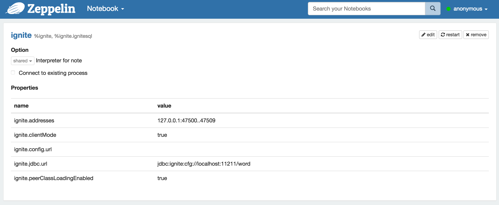
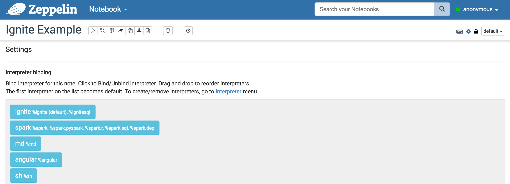
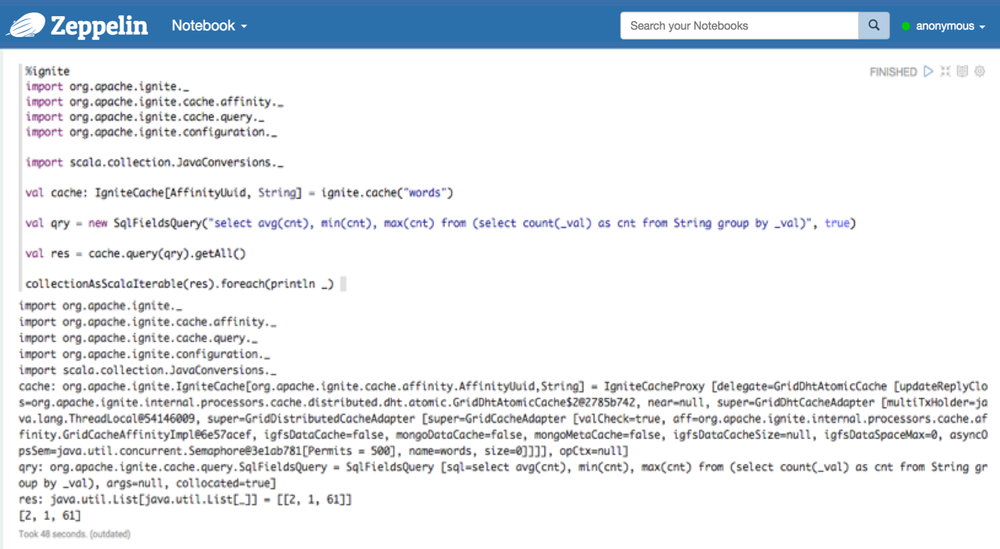

Ignite Interpreter for Apache Zeppelin
Overview
Apache Ignite In-Memory Data Fabric is a high-performance, integrated and distributed in-memory platform for computing and transacting on large-scale data sets in real-time, orders of magnitude faster than possible with traditional disk-based or flash technologies.

You can use Zeppelin to retrieve distributed data from cache using Ignite SQL interpreter. Moreover, Ignite interpreter allows you to execute any Scala code in cases when SQL doesn't fit to your requirements. For example, you can populate data into your caches or execute distributed computations.
Installing and Running Ignite example
In order to use Ignite interpreters, you may install Apache Ignite in some simple steps:
- Ignite provides examples only with source or binary release. Download Ignite source release or binary release whatever you want. But you must download Ignite as the same version of Zeppelin's. If it is not, you can't use scala code on Zeppelin. The supported Ignite version is specified in Supported Interpreter table for each Zeppelin release. If you're using Zeppelin master branch, please see
ignite.versioninpath/to/your-Zeppelin/ignite/pom.xml. - Examples are shipped as a separate Maven project, so to start running you simply need to import provided
<dest_dir>/apache-ignite-fabric-{version}-bin/examples/pom.xmlfile into your favourite IDE, such as Eclipse.
- In case of Eclipse, Eclipse -> File -> Import -> Existing Maven Projects
- Set examples directory path to Eclipse and select the pom.xml.
- Then start
org.apache.ignite.examples.ExampleNodeStartup(or whatever you want) to run at least one or more ignite node. When you run example code, you may notice that the number of node is increase one by one.
Tip. If you want to run Ignite examples on the cli not IDE, you can export executable Jar file from IDE. Then run it by using below command.
$ nohup java -jar </path/to/your Jar file name>
Configuring Ignite Interpreter
At the "Interpreters" menu, you may edit Ignite interpreter or create new one. Zeppelin provides these properties for Ignite.
| Property Name | value | Description |
|---|---|---|
| ignite.addresses | 127.0.0.1:47500..47509 | Coma separated list of Ignite cluster hosts. See [Ignite Cluster Configuration](https://apacheignite.readme.io/docs/cluster-config) section for more details. |
| ignite.clientMode | true | You can connect to the Ignite cluster as client or server node. See [Ignite Clients vs. Servers](https://apacheignite.readme.io/docs/clients-vs-servers) section for details. Use true or false values in order to connect in client or server mode respectively. |
| ignite.config.url | Configuration URL. Overrides all other settings. | |
| ignite.jdbc.url | jdbc:ignite:cfg://default-ignite-jdbc.xml | Ignite JDBC connection URL. |
| ignite.peerClassLoadingEnabled | true | Enables peer-class-loading. See [Zero Deployment](https://apacheignite.readme.io/docs/zero-deployment) section for details. Use true or false values in order to enable or disable P2P class loading respectively. |

How to use
After configuring Ignite interpreter, create your own notebook. Then you can bind interpreters like below image.

For more interpreter binding information see here.
Ignite SQL interpreter
In order to execute SQL query, use %ignite.ignitesql prefix.
Supposing you are running org.apache.ignite.examples.streaming.wordcount.StreamWords, then you can use "words" cache( Of course you have to specify this cache name to the Ignite interpreter setting section ignite.jdbc.url of Zeppelin ).
For example, you can select top 10 words in the words cache using the following query
%ignite.ignitesql
select _val, count(_val) as cnt from String group by _val order by cnt desc limit 10

As long as your Ignite version and Zeppelin Ignite version is same, you can also use scala code. Please check the Zeppelin Ignite version before you download your own Ignite.
%ignite
import org.apache.ignite._
import org.apache.ignite.cache.affinity._
import org.apache.ignite.cache.query._
import org.apache.ignite.configuration._
import scala.collection.JavaConversions._
val cache: IgniteCache[AffinityUuid, String] = ignite.cache("words")
val qry = new SqlFieldsQuery("select avg(cnt), min(cnt), max(cnt) from (select count(_val) as cnt from String group by _val)", true)
val res = cache.query(qry).getAll()
collectionAsScalaIterable(res).foreach(println _)

Apache Ignite also provides a guide docs for Zeppelin "Ignite with Apache Zeppelin"